CUDA execution model
GPU Architecture Overview
Architecture is built around an array of Streaming Multiprocessors (SM).
Key components:
- CUDA cores
- Shared memory/L1 cache
- Register file
- Load/store units
- Special function units
- Warp scheduler
Fermi architecture
GPU Architecture Overview
- Each SM supports concurrent execution of hundreds of threads.
- When a kernel is launched, thread blocks are distributed among available SMs.
- On each SM, blocks are partitioned into groups of 32 threads called warps.
- All threads in a warp execute the same instruction at the same time.
- Each thread has its own instruction address counter and register state.
Single-Instruction-Mutliple-Thread (SIMT)
- SIMD model is used for multithreading on CPU.
- SIMD requires that all vector elements in a vector execute together in a unified synchronous group.
- With SIMT, multiple threads in the same warp may execute independently, thus individual threads may have different behaviour.
Thus in SIMT threads have 3 important aspects that SIMD threads do not:
- Each thread has its own instruction address counter.
- Each thread has its own register state.
- Each thread can have an independent execution path.
GPU Architecture Overview
A thread block is schedules on one SM and remains there until execution completes.
GPU Architecture Overview
- Registers are partitioned among threads and shared memory is partitioned among blocks.
- Threads in a thread block can communicate through these resources.
- Threads within a block logically run in parallel, but physically they cannot all execute at the same time.
- Sharing data among threads can lead to race conditions.
- Synchronisation of all threads in a block is possible using primitives.
- Inter-block synchronisation is now possible using cooperative groups (added in CUDA 9).
GPU Volta Architecture
Volta White PaperProfile-Driven Optimisation
Profiling is the act of analysing program performance by measuring:
- Memory or compute complexity of the code
- Use of particular instructions
- Frequency and duration of function calls
In HPC applications the sequence of code development is usually:
- Develop the code and ensure the results are correct
- Optimise the code to improve performance (profiling)
Profile-Driven Optimisation
Two main profiling tools: nvvp, a visual profiler; and nvprof, a command-line profiler.
These profilers collect information about events and metrics:
- An event is a countable activity corresponding to a hardware counter collected during kernel execution.
- A metric is calculated from one or more events.
- Most counters are reported per SM, not the whole GPU.
- A single run will collect only a few counters, and some are mutually exclusive. Several runs may be required to get full information.
- Counter values may vary between runs.
Profile-Driven Optimisation
Important note: for devices of compute capability 7.2 or higher nvprof no longer works!
The Nsight Compute Command-Line Interface (CLI) may be used instead: ncu.
Profile-Driven Optimisation
Main performance limiters:
- Memory bandwidth
- Compute resources
- Instruction and memory latency
This chapter concentrates on instruction latency and some aspects of compute resource limitations.
Warp execution
- Kernel is launched, thread blocks are distributed among SMs.
- Then each block is partitioned into warps.
- All 32 threads in a warp execute the same instruction on its own private data (SIMT model). 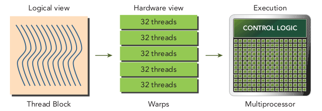
Warp execution
Thread blocks are 1-, 2- or 3-dimensional logically. In hardware, everything is one dimensional.
As an example, 1D block with $128$ threads:
- Warp 0: threads 0 to 31
- Warp 1: threads 32 to 63
- Warp 2: threads 64 to 95
- Warp 3: threads 96 to 127
For a 3D block the unique thread ID is:
threadIdx.z*blockDim.y*blockDim.x + threadIdx.y*blockDim.x + threadIdx.x
Warp execution
The number of warps per block is given by $\text{ceil} ( \text{threads per block} / \text{warp size} )$.
A warp is never split between blocks.
Warp divergence
- Conditionals (if/else) lead to code branching.
- CPUs have hardware for branch prediction: attempting to predict which branch will be executed.
- If the prediction is correct the performance cost of branching is substantially reduced.
- GPUs do not have branch prediction, and all threads in a warp must execute the same instruction.
Warp divergence
Consider a typical if/else construction:
if (cond) {
...
} else {
...
}Example: for $16$ threads in a warp cond is true, while for the other $16$ it is false.
This means half the threads in the warp execute the if block and half execute the else block. But... all threads in a warp must execute the same instruction!
Warp divergence
- This circumstance is known as warp divergence.
- The warp executes each branch sequentially, with half of the threads disabled.
- This can severely degrade performance.
Warp divergence
__global__ void mathKernel1(float *c) {
int tid = blockIdx.x * blockDim.x + threadIdx.x;
float a, b;
a = b = 0.0f;
if (tid % 2 == 0) {
a = 100.0f;
} else {
b = 200.0f;
}
c[tid] = a + b;
}In this case, even-numbered threads execute the if block and odd-numbered threads execute the else block.
This (maximal) warp divergence can be avoided by working at the level of warps.
Warp divergence
__global__ void mathKernel2(float *c) {
int tid = blockIdx.x * blockDim.x + threadIdx.x;
float a, b;
a = b = 0.0f;
if ((tid / warpSize) % 2 == 0) {
a = 100.0f;
} else {
b = 200.0f;
}
c[tid] = a + b;
}Now it is threads in even-numbered warps that execute the if block and odd-numbered warps that execute the else block.
There is no warp divergence in this case.
Warp divergence
- We can compare these kernels in the code
simpleDivergence.cu. - The profiler can give us more information:
nvprof --metrics branch_efficiency ./simpleDivergence
Important: for my GPU the compilation must use -arch=sm_50 otherwise the code compiles but the kernels are never run! The profiler then reports that no kernels were profiled. For some metrics it may be necessary to run nvprof using sudo.
Warp divergence
Branch efficiency is defined as: $100 \times \left( \frac{\text{# branches} - \text{# divergent branches}}{\text{# branches}} \right)$
In our code branch efficiency is $100$%. This is due to compiler optimisations which replace branch instructions with predicated instructions for short, conditional code segments...
Warp divergence
__global__ void mathKernel3(float *c) {
int tid = blockIdx.x * blockDim.x + threadIdx.x;
float ia, ib;
ia = ib = 0.0f;
bool ipred = (tid % 2 == 0);
if (ipred) {
ia = 100.0f;
}
if (!ipred) {
ib = 200.0f;
}
c[tid] = ia + ib;
}Warp divergence
This compiler optimisation removes the warp divergence, but is only applied for short if/else blocks.
We can force the compiler NOT to optimise the branches in this way:
nvcc -g -G -arch=sm_50 simpleDivergence.cu -o simpleDivergence.x
We can also find the number of branches and divergent branches using nvprof:
nvprof --events branch,divergent_branch ./simpleDivergence.x
Resource partitioning
Each thread has access to the following resources:
- Program counters
- Registers
- Shared memory
Each SM has 32-bit registers that are partitioned among threads.
The shared memory is partitioned among thread blocks.
The number of blocks and warps that can reside on an SM for a given kernel depends on what the kernel requires and the resources available.
Resource partitioning
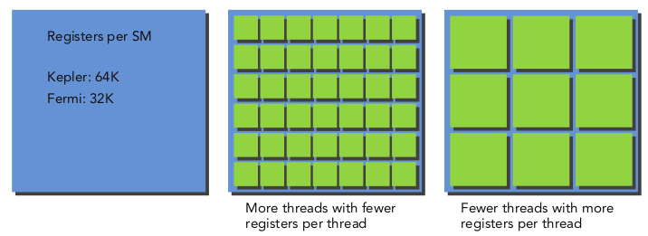

Resource partitioning
If there are insufficient resources to allocate at least one block on an SM, the kernel launch will fail.
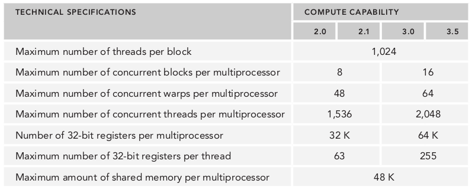
Resource partitioning
- Active block: block that has been allocated resources.
- Active warp: warps within an active block.
- Selected warp: actively executing warp.
- Stalled warp: not ready for execution.
- Eligible warp: 32 cores available, all instruction arguments ready.
Latency hiding
The number of clock cycles between an instruction being issued and an instruction being completed is instruction latency.
Full compute resource utilisation is achieved when all warp schedulers have an eligible warp at every clock cycle.
CPUs are designed to minimise latency for a few threads.
GPUs maximise throughput to hide latency.
Latency hiding
Instruction latency:
- Arithmetic instructions: 10-20 cycles
- Global memory access instructions: 400-800 cycles

Latency hiding
We can estimate the number of active warps required to hide latency:
Number of required warps $=$ Latency $\times$ Throughput
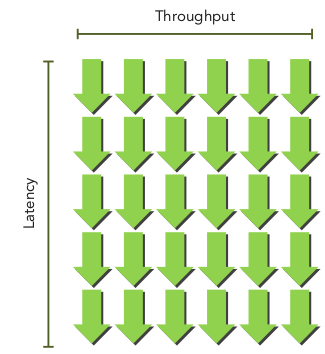Latency hiding
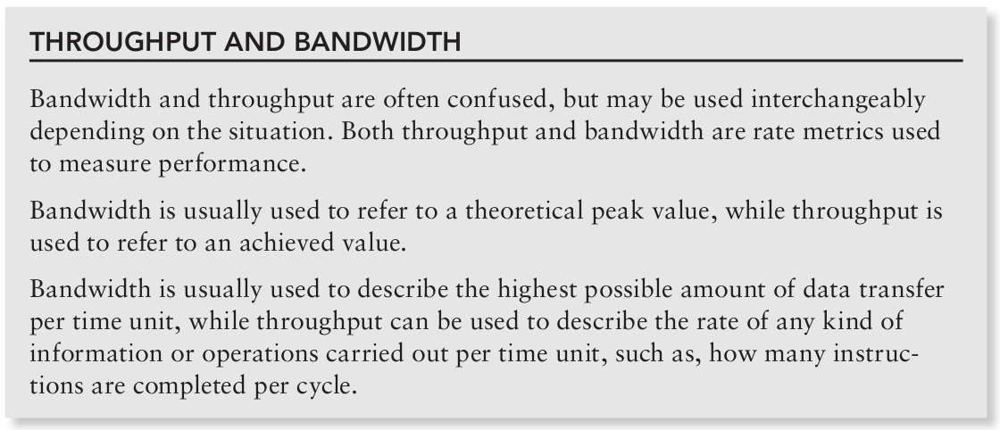Latency hiding: arithmetic
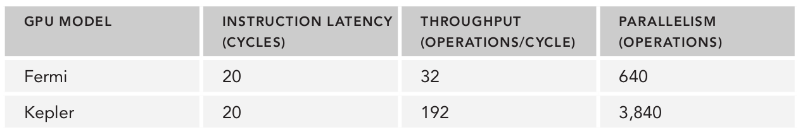Fermi GPUs require 20 warps per SM for full compute utilisation.
Two ways to increase parallelism:
- Instruction-level parallelism: more independent instructions within a thread
- Thread-level parallelism: more concurrently eligible threads
Latency hiding: memory
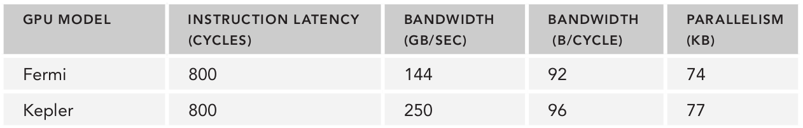Device memory frequency can be checked with:
nvidia-smi -a -q -d CLOCK | fgrep -A 3 "Max Clocks" | fgrep "Memory"
Latency hiding: memory
Example with Fermi architecture:
Memory frequency of 1.566 GHz, bandwidth 144 GB/s: (144 GB/s)/1.566 = 92 Bytes/cycle
Multiplying by memory latency of 800 cycles, we need 74 KB of memory "in-flight" for full utilisation.
If each thread moves one float (4 bytes) from global memory, we need 18500 threads (579 warps) to hide memory latency.
Latency hiding
Latency hiding depends on the number of active warps per SM.
This is determined by the execution configuration and the resource constraints (registers, shared memory)
Finding an optimal execution configuration requires finding the balance between latency hiding and resource utilisation.
Occupancy
Instructions are sequential within each CUDA core.
When a warp stalls, the SM switches to other eligible warps.
Ideally, we should have enough warps to keep the cores of the GPU occupied.
Occupancy: active warps / maximum warps (per SM)
The maximum number of warps per SM may be found from cudaGetDeviceProperties (using maxThreadsPerMultiProcessor property).
See simpleDeviceQuery.cu
Occupancy
CUDA Toolkit includes an Excel spreadsheet called the CUDA Occupancy Calculator to assist in selecting grid/block sizes to maxmimise occpancy for a kernel.
Occupancy
Calculation requires information about resource usage:
- Threads per block
- Registers per thread (can be found from compiler using flag
--ptxas-options=-v) - Shared memory per block (see later in the course)
Register usage can be manually controlled using -maxrregcount=NUM in the compiler. This limits the number of registers per thread to NUM.
Occupancy
Occupancy can be significantly affected by block configuration:
- Small thread blocks: too few threads per block causes the maximum number of warps on an SM to be reached before resources are fully utilised.
- Large thread blocks: too many threads per block leads to fewer resources available (on each SM) for each thread.
Occupancy: guidelines
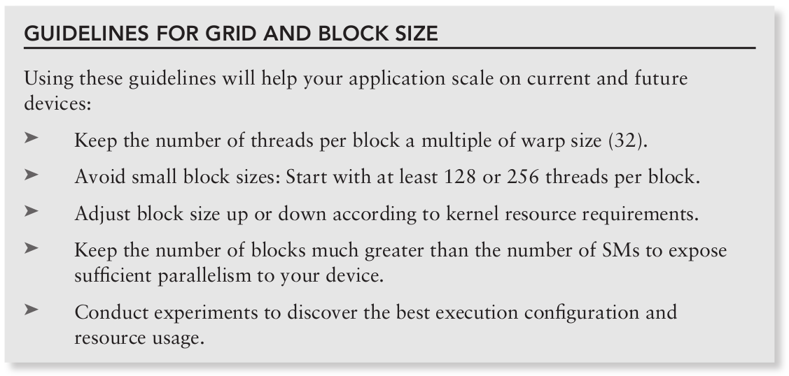
Synchronisation
Synchronisation is possible at two levels (without the use of cooperative groups):
- System-level: synchronise host and device:
cudaError_t cudaDeviceSynchronize(void);
- Block-level: wait until all threads in a block reach the same point:
__device__ void __syncthreads(void);
Synchronisation and scalability
Block synchronisation is prohibited to ensure scalability.
Thread blocks may execute in any order, in parallel or in series.
This flexibility ensures that CUDA programs are scalable across an arbitrary number of compute cores (i.e. it should run faster on a more powerful GPU without any major modification).
Synchronisation and scalability
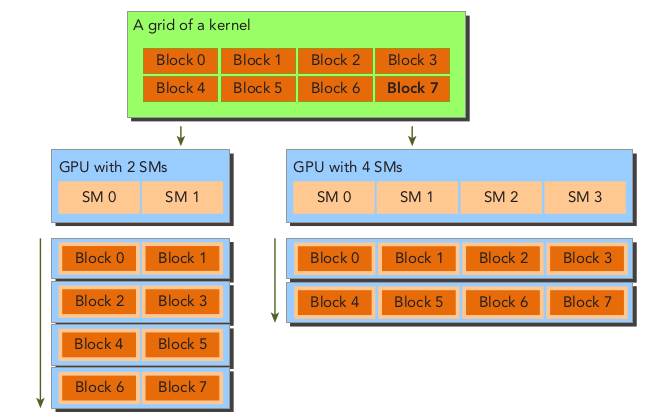
Practical example: profiling sumMatrixOnGPU2D
We modify this code to allow the block configuration to be specified on the command line:
if (argc > 2) {
dimx = atoi(argv[1]);
dimy = atoi(argv[2]);
}
dim3 block(dimx, dimy);
dim3 grid((nx + bloxk.x - 1) / block.c, (ny + block.y - 1) / block.y);Practical example: profiling sumMatrixOnGPU2D
Now we set a baseline:
| Configuration | Execution time (ms) |
| $(32,32)$ | $51.8$ |
| $(32,16)$ | $46.1$ |
| $(16,32)$ | $46.7$ |
| $(16,16)$ | $47.5$ |
We can now confirm if these differences are due to differences in occupancy by using:
nvprof --metrics achieved_occupancy
(On Kosmos it should be ncu.)
Practical example: profiling sumMatrixOnGPU2D
| Configuration | Execution time (ms) | Achieved occupancy |
| $(32,32)$ | $51.8$ | $81.4\%$ |
| $(32,16)$ | $46.1$ | $86.3\%$ |
| $(16,32)$ | $46.7$ | $83.8\%$ |
| $(16,16)$ | $47.5$ | $87.9\%$ |
Second run has higher occupancy than the first, thus it is faster.
Last run has highest occupancy but is not the fastest: there are other factors restricting performance.
Practical example: profiling sumMatrixOnGPU2D
There are 3 memory operations in the kernel: C[idx] = A[idx] + B[idx] (2 loads and 1 store).
We can check memory throughput with nvprof --metrics gld_throughput.
| Configuration | Execution time (ms) | Global load throughput |
| $(32,32)$ | $51.8$ | $2.53$ GB/s |
| $(32,16)$ | $46.1$ | $2.56$ GB/s |
| $(16,32)$ | $46.7$ | $2.55$ GB/s |
| $(16,16)$ | $47.5$ | $2.55$ GB/s |
On my GPU, all throughput measurements are very similar!
Practical example: profiling sumMatrixOnGPU2D
We can check memory load efficiency with nvprof --metrics gld_efficiency (ratio of global load throughput requested to required).
| Configuration | Execution time (ms) | Global load efficiency |
| $(32,32)$ | $51.8$ | $100\%$ |
| $(32,16)$ | $46.1$ | $100\%$ |
| $(16,32)$ | $46.7$ | $100\%$ |
| $(16,16)$ | $47.5$ | $100\%$ |
Practical example: profiling sumMatrixOnGPU2D
We can try other configurations, $(64,2)$, $(64,4)$, $(64,8)$, $(128,2)$, $(128,4)$ etc. $(256, 8)$ gives an error... why?

Parallel Reduction
The paradigmatic example of a reduction operation is to calculate the sum of an array of numbers. Sequentially this is easy to implement:
int sum = 0;
for (int i = 0; i < N; i++)
sum += array[i];Parallel Reduction
Addition is an associative and commutative operation, thus we can sum the elements in any order. This enables parallelisation:
- Partition the vector into chunks.
- Each thread calculates the partial sum for its chunk.
- Add partial results to get final sum.
Parallel Reduction
One common solution is using iterative pairwise summation:
- Each chunk is a pair of elements, which are summed with the result stored in-place in the original vector.
- New values are then used as input in the next iteration.
- The number of input values halves on every iteration.
We can use neighbour pairs or interleaved pairs (pairs are separated in the array).
Parallel Reduction
Neighbour pairs
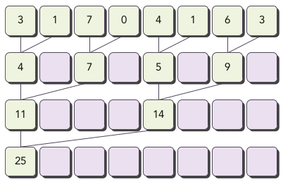For $N$ elements, this requires $N-1$ sums and $\log_2 N$ steps.
Parallel Reduction
Interleaved pairs
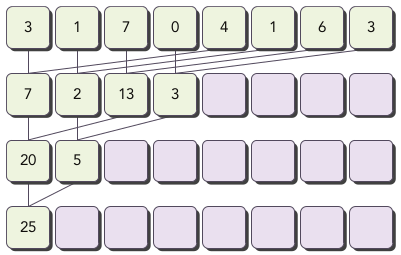The inputs to a thread are separated (strided) by half the length of the input on each step.
A (recursive) serial implementation
Recursive (non-parallel) implementation of interleaved method:
int recursiveReduce(int *data, int const size) {
// terminate check
if (size == 1) return data[0];
// renew the stride
int const stride = size / 2;
// in-place reduction
for (int i = 0; i < stride; i++) {
data[i] += data[i + stride];
}
// call recursively
return recursiveReduce(data, stride);
}Parallel reduction

Parallel reduction: kernel code
__global__ void reduceNeighbored(int *g_idata, int *g_odata, unsigned int n) {
// set thread ID
unsigned int tid = threadIdx.x;
// convert global data pointer to the local pointer of this block
int *idata = g_idata + blockIdx.x * blockDim.x;
// boundary check
if (tid >= n) return;
// in-place reduction in global memory
for (int stride = 1; stride < blockDim.x; stride *= 2) {
if ((tid % (2 * stride)) == 0) {
idata[tid] += idata[tid + stride];
}
// synchronize within block
__syncthreads();
}
// write result for this block to global mem
if (tid == 0) g_odata[blockIdx.x] = idata[0];
}Parallel reduction: method
- Each thread block operates independently on a part of the full array $A$.
- Kernel has 2 global memory arrays: one for $A$, another smaller array for the partial sums in each thread block.
- Each iteration of a loop performs one step of the reduction.
- Reduction is done in-place (values in global memory $A$ are replaced at each step).
__syncthreadsis used to ensure that all partial sums in current iteration have been saved to global memory before any threads in the same thread block begin the next iteration.- After final iteration, the sum for the entire thread block is saved to global memory.
Parallel reduction: method
- The distance (stride) between two neighbouring elements starts at $1$.
- In each iteration this is doubled.
- After first iteration the even elements of
idataare replaced with partial sums. - After second iteration every fourth element of
idatais replaced with a partial sum. - As there is no synchronisation between thread blocks the results for each block are copied back to the host and sequentially summed on the CPU.
Parallel reduction: method
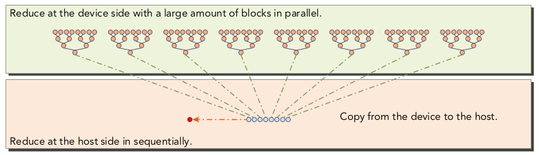Parallel reduction: main function
int main(int argc, char **argv) {
// set up device
int dev = 0;
cudaDeviceProp deviceProp;
cudaGetDeviceProperties(&deviceProp, dev);
printf("%s starting reduction at ", argv[0]);
printf("device %d: %s ", dev, deviceProp.name);
cudaSetDevice(dev);
bool bResult = false;
// initialization
int size = 1<<24; // total number of elements to reduce
printf(" with array size %d ", size);
// execution configuration
int blocksize = 512; // initial block size
if(argc > 1) {
blocksize = atoi(argv[1]); // block size from command line argument
}
dim3 block (blocksize,1);
dim3 grid ((size+block.x-1)/block.x,1);
printf("grid %d block %d\n",grid.x, block.x);
// allocate host memory
size_t bytes = size * sizeof(int);
int *h_idata = (int *) malloc(bytes);
int *h_odata = (int *) malloc(grid.x*sizeof(int));
int *tmp = (int *) malloc(bytes);
// initialize the array
for (int i = 0; i < size; i++) {
// mask off high 2 bytes to force max number to 255
h_idata[i] = (int)(rand() & 0xFF);
}
memcpy (tmp, h_idata, bytes);
size_t iStart,iElaps;
int gpu_sum = 0;
// allocate device memory
int *d_idata = NULL;
int *d_odata = NULL;
cudaMalloc((void **) &d_idata, bytes);
cudaMalloc((void **) &d_odata, grid.x*sizeof(int));
// cpu reduction
iStart = seconds ();
int cpu_sum = recursiveReduce(tmp, size);
iElaps = seconds () - iStart;
printf("cpu reduce elapsed %d ms cpu_sum: %d\n",iElaps,cpu_sum);
// kernel 1: reduceNeighbored
cudaMemcpy(d_idata, h_idata, bytes, cudaMemcpyHostToDevice);
cudaDeviceSynchronize();
iStart = seconds ();
warmup<<<grid, block>>>(d_idata, d_odata, size);
cudaDeviceSynchronize();
iElaps = seconds () - iStart;
cudaMemcpy(h_odata, d_odata, grid.x*sizeof(int), cudaMemcpyDeviceToHost);
gpu_sum = 0;
for (int i=0; i<grid.x; i++) gpu_sum += h_odata[i];
printf("gpu Warmup elapsed %d ms gpu_sum: %d <<<grid %d block %d>>>\n",
iElaps,gpu_sum,grid.x,block.x);
// kernel 1: reduceNeighbored
cudaMemcpy(d_idata, h_idata, bytes, cudaMemcpyHostToDevice);
cudaDeviceSynchronize();
iStart = seconds ();
reduceNeighbored<<<grid, block>>>(d_idata, d_odata, size);
cudaDeviceSynchronize();
iElaps = seconds () - iStart;
cudaMemcpy(h_odata, d_odata, grid.x*sizeof(int), cudaMemcpyDeviceToHost);
gpu_sum = 0;
for (int i=0; i<grid.x; i++) gpu_sum += h_odata[i];
printf("gpu Neighbored elapsed %d ms gpu_sum: %d <<<grid %d block %d>>>\n",
iElaps,gpu_sum,grid.x,block.x);
/// free host memory
free(h_idata);
free(h_odata);
// free device memory
cudaFree(d_idata);
cudaFree(d_odata);
// reset device
cudaDeviceReset();
// check the results
bResult = (gpu_sum == cpu_sum);
if(!bResult) printf("Test failed!\n");
return EXIT_SUCCESS;
}Parallel reduction: divergence
The conditional in the kernel causes divergent warps:
if ((tid % (2 * stride)) == 0)
Only even-numbered threads do any work on each iteration.
Warp divergence can be reduced by arranging the thread indices such that neighbouring threads perform the addition.
Parallel reduction: reduced divergence
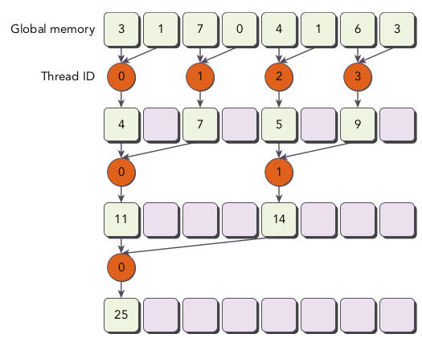
Parallel reduction: reduced divergence, kernel code
__global__ void reduceNeighboredLess (int *g_idata, int *g_odata, unsigned int n) {
// set thread ID
unsigned int tid = threadIdx.x;
unsigned int idx = blockIdx.x * blockDim.x + threadIdx.x;
// convert global data pointer to the local pointer of this block
int *idata = g_idata + blockIdx.x*blockDim.x;
// boundary check
if(idx >= n) return;
// in-place reduction in global memory
for (int stride = 1; stride < blockDim.x; stride *= 2) {
// convert tid into local array index
int index = 2 * stride * tid;
if (index < blockDim.x) {
idata[index] += idata[index + stride];
}
// synchronize within threadblock
__syncthreads();
}
// write result for this block to global mem
if (tid == 0) g_odata[blockIdx.x] = idata[0];
}Parallel reduction: reduced divergence
- Array index is set with
int index = 2 * stride * tid;and conditional is removed. - Using
if (index < blockDim.x)ensures that the first half of a thread block executes the addition (because the stride is multiplied by 2) - With $512$ threads in a block, the first $8$ warps execute on the first iteration, then the first $4$ etc.
- Divergence occurs in later iterations when the total number of threads working is less than the warp size.
Parallel reduction: modified main
The call to the new kernel is added to the main function:
// kernel 2: reduceNeighbored with less divergence
cudaMemcpy(d_idata, h_idata, bytes, cudaMemcpyHostToDevice);
cudaDeviceSynchronize();
iStart = seconds();
reduceNeighboredLess<<<grid, block>>>(d_idata, d_odata, size);
cudaDeviceSynchronize();
iElaps = seconds() - iStart;
cudaMemcpy(h_odata, d_odata, grid.x*sizeof(int), cudaMemcpyDeviceToHost);
gpu_sum = 0;
for (int i=0; i < grid.x; i++) gpu_sum += h_odata[i];
printf("gpu Neighbored2 elapsed %d ms gpu_sum: %d <<<grid %d block %d>>>\n",
iElaps,gpu_sum,grid.x,block.x);Parallel reduction: reduced divergence
- The new kernel is about twice as fast as the old one (on my laptop). Why? We use the profiler.
- The metric
inst_per_warptells us the average number of instructions executed by each warp (more instructions per warp indicates high divergence). - With
gld_throughputwe can see memory load throughput (higher value indicates faster data transfer).
| Code | Inst. per warp | Load throughput |
| Kernel 1 | $417.9$ | $29.2$ GB/s |
| Kernel 2 | $149.6$ | $55.2$ GB/s |
Parallel reduction: interleaved pairs
We can reverse the striding by starting with a stride of half the block size and then reducing by half on each iteration:

This changes the load/store locations in global memory for each thread. We will see later why this is important.
Parallel reduction: interleaved pairs, kernel code
__global__ void reduceInterleaved (int *g_idata, int *g_odata, unsigned int n) {
// set thread ID
unsigned int tid = threadIdx.x;
unsigned int idx = blockIdx.x * blockDim.x + threadIdx.x;
// convert global data pointer to the local pointer of this block
int *idata = g_idata + blockIdx.x * blockDim.x;
// boundary check
if(idx >= n) return;
// in-place reduction in global memory
for (int stride = blockDim.x / 2; stride > 0; stride >>= 1) {
if (tid < stride) {
idata[tid] += idata[tid + stride];
}
__syncthreads();
}
// write result for this block to global mem
if (tid == 0) g_odata[blockIdx.x] = idata[0];
}Parallel reduction: interleaved pairs
- The stride between elements starts at half a block size, then is reduced by half in each iteration:
for (int stride = blockDim.x / 2; stride > 0; stride >>= 1) { - Then the first half executes the addition on the first iteration, the second half on the second iteration, etc. by using
if (tid < stride)
Parallel reduction: interleaved pairs, main function
cudaMemcpy(d_idata, h_idata, bytes, cudaMemcpyHostToDevice);
cudaDeviceSynchronize();
iStart = seconds();
reduceInterleaved <<< grid, block >>> (d_idata, d_odata, size);
cudaDeviceSynchronize();
iElaps = seconds() - iStart;
cudaMemcpy(h_odata, d_odata, grid.x*sizeof(int), cudaMemcpyDeviceToHost);
gpu_sum = 0;
for (int i = 0; i < grid.x; i++) gpu_sum += h_odata[i];
printf("gpu Interleaved elapsed %f sec gpu_sum: %d <<<grid %d block %d>>>\n",
iElaps,gpu_sum,grid.x,block.x);Parallel reduction: interleaved pairs
On my GPU the interleaved kernel is about 1.4 times faster than the reduced divergence kernel, and about 2.3 times faster than the original kernel.
The performance improvement is because of global memory load/store patterns. We will learn about this when we study GPU memory in Chapter 4.
Parallel reduction: unrolling loops
- Loop unrolling attempts to optimize loop execution by reducing the frequency of brnaches and loop maintenance instructions.
- This is done by explicitly writing the repeated code multiple times in the body of the loop and then reducing the loop iterations or removing it entirely.
- The number of copies of the loop body is called the loop unrolling factor. The number of iterations is divided by the loop unrolling factor.
Loop unrolling example
Consider the following simple sequential loop:
for (int i = 0; i < 100; i++) {
a[i] = b[i] + c[i];
}Loop unrolling example
Loop unrolling factor of 2:
for (int i = 0; i < 100; i += 2) {
a[i] = b[i] + c[i];
a[i+1] = b[i+1] + c[i+1];
}Loop unrolling example
- In this example the
i < 100check is performed $100$ times in the original loop, $50$ times in the unrolled loop. - The read/write operations in each statement are independent, so the CPU can issue simultaneous memory instructions.
- Note that most modern compilers can automatically unroll simple loops like this to maximise performance.
- In CUDA loop unrolling can help to reduce instruction overhead and creating more independent instructions to schedule, increasing the number of eligible warps and hiding latency.
Parallel reduction: loop unrolling
Let's modify the reduceInterleaved kernel:
__global__ void reduceUnrolling2 (int *g_idata, int *g_odata, unsigned int n) {
// set thread ID
unsigned int tid = threadIdx.x;
unsigned int idx = blockIdx.x * blockDim.x * 2 + threadIdx.x;
// convert global data pointer to the local pointer of this block
int *idata = g_idata + blockIdx.x * blockDim.x * 2;
// unrolling 2 data blocks
if (idx + blockDim.x < n) g_idata[idx] += g_idata[idx + blockDim.x];
__syncthreads();
// in-place reduction in global memory
for (int stride = blockDim.x / 2; stride > 0; stride >>= 1) {
if (tid < stride) {
idata[tid] += idata[tid + stride];
}
// synchronize within threadblock
__syncthreads();
}
// write result for this block to global mem
if (tid == 0) g_odata[blockIdx.x] = idata[0];
}Parallel reduction: loop unrolling
- The important change is this line:
if (idx + blockDim.x < n) g_idata[idx] += g_idata[idx + blockDim.x]; - Conceptually this is like an iteration of the reduction loop that applies the reduction across data blocks.
- The global array index is then adjusted accordingly as only half the number of thread blocks are now required:
unsigned int idx = blockIdx.x * blockDim.x * 2 + threadIdx.x;
int *idata = g_idata + blockIdx.x * blockDim.x * 2;Parallel reduction: loop unrolling
The kernel call now requires half the number of blocks:
cudaMemcpy(d_idata, h_idata, bytes, cudaMemcpyHostToDevice);
cudaDeviceSynchronize();
iStart = seconds();
reduceUnrolling2 <<< grid.x/2, block >>> (d_idata, d_odata, size);
cudaDeviceSynchronize();
iElaps = seconds() - iStart;
cudaMemcpy(h_odata, d_odata, grid.x/2*sizeof(int), cudaMemcpyDeviceToHost);
gpu_sum = 0;
for (int i = 0; i < grid.x / 2; i++) gpu_sum += h_odata[i];
printf("gpu Unrolling2 elapsed %f sec gpu_sum: %d <<<grid %d block %d>>>\n",
iElaps,gpu_sum,grid.x/2,block.x);Parallel reduction: loop unrolling
Timings for varying unroll factors:
| Factor | Timing |
| 2 | 0.004827 s |
| 4 | 0.002761 s |
| 8 | 0.001956 s |
Parallel reduction: loop unrolling
These improvements are closely related to the data throughput achieved by giving more work to the active warps (checked in nvprof with dram_read_throughout metric).
| Factor | DRAM read throughput |
| 2 | 13.7 GB/s |
| 4 | 23.8 GB/s |
| 8 | 40.5 GB/s |
Parallel reduction: unrolled warps
Once the number of values to be reduced is less than the size of a warp the __syncthreads instructions are irrelevant (there is implicit intra-warp synchronisation after each instruction).
We can unroll the last $6$ iterations of the reduction loop as follows:
if (tid < 32) {
volatile int *vmem = idata;
vmem[tid] += vmem[tid + 32];
vmem[tid] += vmem[tid + 16];
vmem[tid] += vmem[tid + 8];
vmem[tid] += vmem[tid + 4];
vmem[tid] += vmem[tid + 2];
vmem[tid] += vmem[tid + 1];
}Parallel reduction: unrolled warps
The volatile qualifier tells the compiler to store vmem[tid] back to global memory with every assignment.
Not using this qualifier means the compiler may attempt to optimise the code by only storing the variable in a cache or register, which will cause the code to not work properly.
volatile causes the compiler to assume the value can be changed or used at any time by other threads, and so it must be written to global memory.
Parallel reduction: unrolled warps
__global__ void reduceUnrollWarps8 (int *g_idata, int *g_odata, unsigned int n)
{
// set thread ID
unsigned int tid = threadIdx.x;
unsigned int idx = blockIdx.x * blockDim.x * 8 + threadIdx.x;
// convert global data pointer to the local pointer of this block
int *idata = g_idata + blockIdx.x * blockDim.x * 8;
// unrolling 8
if (idx + 7 * blockDim.x < n)
{
int a1 = g_idata[idx];
int a2 = g_idata[idx + blockDim.x];
int a3 = g_idata[idx + 2 * blockDim.x];
int a4 = g_idata[idx + 3 * blockDim.x];
int b1 = g_idata[idx + 4 * blockDim.x];
int b2 = g_idata[idx + 5 * blockDim.x];
int b3 = g_idata[idx + 6 * blockDim.x];
int b4 = g_idata[idx + 7 * blockDim.x];
g_idata[idx] = a1 + a2 + a3 + a4 + b1 + b2 + b3 + b4;
}
__syncthreads();
// in-place reduction in global memory
for (int stride = blockDim.x / 2; stride > 32; stride >>= 1)
{
if (tid < stride)
{
idata[tid] += idata[tid + stride];
}
// synchronize within threadblock
__syncthreads();
}
// unrolling warp
if (tid < 32)
{
volatile int *vmem = idata;
vmem[tid] += vmem[tid + 32];
vmem[tid] += vmem[tid + 16];
vmem[tid] += vmem[tid + 8];
vmem[tid] += vmem[tid + 4];
vmem[tid] += vmem[tid + 2];
vmem[tid] += vmem[tid + 1];
}
// write result for this block to global mem
if (tid == 0) g_odata[blockIdx.x] = idata[0];
}Parallel reduction: unrolled warps
The profiler tells us that there are fewer stalled warps due to the use of __syncthreads (checked in nvprof with stall_sync metric).
| Kernel | Stall percentage |
| 8x unroll | 49.9% |
| 8x unroll, warp unroll | 35.8% |
Parallel reduction: complete unroll
- If the number of iterations in a loop is known at compile-time, the loop can be completely unrolled.
- The maximum number of threads per block is $1024$ and the loop iteration count in the reduction operation is based on thread block dimension.
- The reduction operation can therefore be completely unrolled.
Parallel reduction: complete unroll
__global__ void reduceCompleteUnrollWarps8 (int *g_idata, int *g_odata,
unsigned int n)
{
// set thread ID
unsigned int tid = threadIdx.x;
unsigned int idx = blockIdx.x * blockDim.x * 8 + threadIdx.x;
// convert global data pointer to the local pointer of this block
int *idata = g_idata + blockIdx.x * blockDim.x * 8;
// unrolling 8
if (idx + 7 * blockDim.x < n)
{
int a1 = g_idata[idx];
int a2 = g_idata[idx + blockDim.x];
int a3 = g_idata[idx + 2 * blockDim.x];
int a4 = g_idata[idx + 3 * blockDim.x];
int b1 = g_idata[idx + 4 * blockDim.x];
int b2 = g_idata[idx + 5 * blockDim.x];
int b3 = g_idata[idx + 6 * blockDim.x];
int b4 = g_idata[idx + 7 * blockDim.x];
g_idata[idx] = a1 + a2 + a3 + a4 + b1 + b2 + b3 + b4;
}
__syncthreads();
// in-place reduction and complete unroll
if (blockDim.x >= 1024 && tid < 512) idata[tid] += idata[tid + 512];
__syncthreads();
if (blockDim.x >= 512 && tid < 256) idata[tid] += idata[tid + 256];
__syncthreads();
if (blockDim.x >= 256 && tid < 128) idata[tid] += idata[tid + 128];
__syncthreads();
if (blockDim.x >= 128 && tid < 64) idata[tid] += idata[tid + 64];
__syncthreads();
// unrolling warp
if (tid < 32)
{
volatile int *vsmem = idata;
vsmem[tid] += vsmem[tid + 32];
vsmem[tid] += vsmem[tid + 16];
vsmem[tid] += vsmem[tid + 8];
vsmem[tid] += vsmem[tid + 4];
vsmem[tid] += vsmem[tid + 2];
vsmem[tid] += vsmem[tid + 1];
}
// write result for this block to global mem
if (tid == 0) g_odata[blockIdx.x] = idata[0];
}Parallel reduction: optimisations
Timings and speedup:
| Kernel | Time (s) | Step speedup | Cumulative speedup |
| Neighbour (divergent) | 0.0182 | -- | -- |
| Neighbour (non divergent) | 0.0106 | 1.72 | 1.72 |
| Interleaved | 0.0084 | 1.26 | 2.17 |
| Unrolled x2 | 0.0048 | 1.75 | 3.80 |
| Unrolled x4 | 0.0033 | 1.45 | 5.51 |
| Unrolled x8 | 0.0020 | 1.65 | 9.09 |
| Unrolled x8 and warps | 0.0014 | 1.43 | 13.00 |
| Complete unroll | 0.0017 | 0.82!! | 10.66!! |
Parallel reduction: optimisations
The fastest optimised kernel that we have (interleaved threads, 8x unrolling across blocks and warp unrolling) has about 2.3 times more lines of code than the simplest kernel we started with...
...but it runs $13$ times faster!
Parallel reduction: optimisations
Comparison of global memory load/store efficiency:
| Kernel | Time (s) | Load efficiency | Store efficiency |
| Neighbour (divergent) | 0.0182 | 25.0% | 25.0% |
| Neighbour (non divergent) | 0.0106 | 25.0% | 25.0% |
| Interleaved | 0.0084 | 96.2% | 95.5% |
| Unrolled x2 | 0.0048 | 98.0% | 97.7% |
| Unrolled x4 | 0.0033 | 98.7% | 97.7% |
| Unrolled x8 | 0.0020 | 99.2% | 97.7% |
| Unrolled x8 and warps | 0.0014 | 99.4% | 99.4% |
| Complete unroll | 0.0017 | 99.4% | 99.4% |
Dynamic parallelism
- Parent grid may launch a child grid on the GPU.
- Execution of a thread block is not complete until all child grids created by all threads in the block have completed.
- If no explicit synchronisation between parent/child is set then an implicit synchronisation is triggered when the block attempts to exit.
- Child grid is not guaranteed to begin execution until parent thread block explicitly synchronises with the child.
- Parent and child grids share same global and constant memory, but have different local and shared memory.
- All global memory operations in the the parent prior to invocation of the child are visible to the child grid. The operations of the child grid are only visible to the parent after synchronisation when the child completes.
Dynamic parallelism
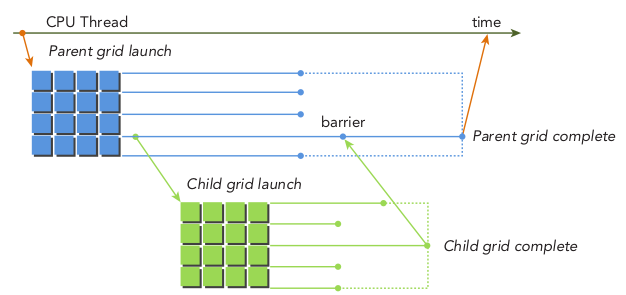
Dynamic parallelism: nested hello world
__global__ void nestedHelloWorld(int const iSize, int iDepth)
{
int tid = threadIdx.x;
printf("Recursion=%d: Hello World from thread %d block %d\n", iDepth, tid,
blockIdx.x);
// condition to stop recursive execution
if (iSize == 1) return;
// reduce block size to half
int nthreads = iSize >> 1;
// thread 0 launches child grid recursively
if(tid == 0 && nthreads > 0)
{
nestedHelloWorld<<<1, nthreads>>>(nthreads, ++iDepth);
printf("-------> nested execution depth: %d\n", iDepth);
}
}Dynamic parallelism: nested hello world
To compile:
nvcc -arch=sm_50 nestedHelloWorld.cu -o nestedHelloWorld.x -lcudadevrt -rdc=true
-lcudadevrt explicitly links the device runtime library and -rdc=true generates relocatable device code (both required for dynamic parallelism).
We can visually check the kernel execution using:
nvprof --export-profile nestHelloWorld.nvvp ./nestedHelloWorld.x
Dynamic parallelism: nested hello world
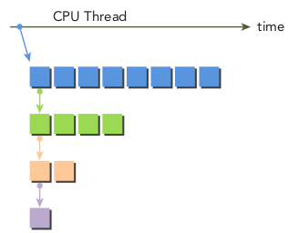
Dynamic parallelism: nested hello world
We can invoke 2 blocks in the parent grid using: ./nestedHelloWorld.x 2
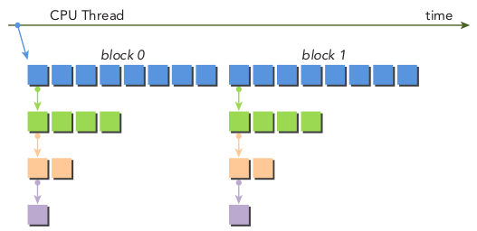
Dynamic parallelism: nested hello world
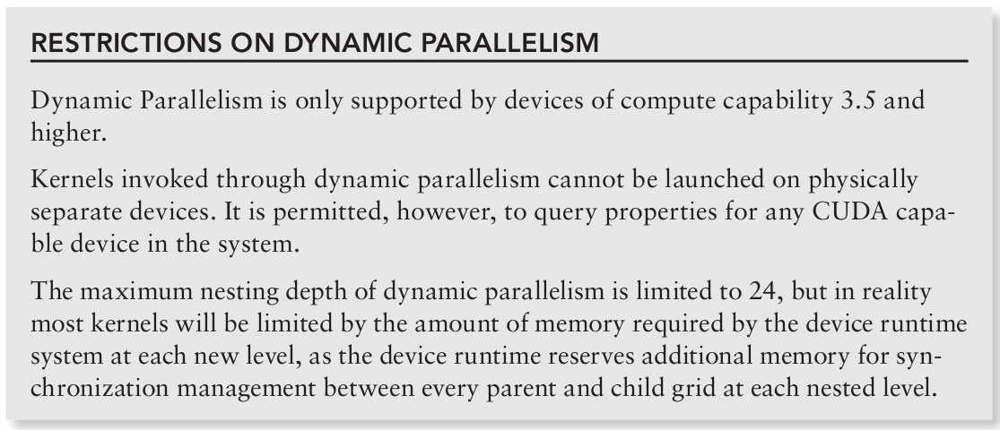
Dynamic parallelism: recursive reduce
__global__ void gpuRecursiveReduce (int *g_idata, int *g_odata, unsigned int isize)
{
// set thread ID
unsigned int tid = threadIdx.x;
// convert global data pointer to the local pointer of this block
int *idata = g_idata + blockIdx.x * blockDim.x;
int *odata = &g_odata[blockIdx.x];
// stop condition
if (isize == 2 && tid == 0)
{
g_odata[blockIdx.x] = idata[0] + idata[1];
return;
}
// nested invocation
int istride = isize >> 1;
if(istride > 1 && tid < istride)
{
// in place reduction
idata[tid] += idata[tid + istride];
}
// sync at block level
__syncthreads();
// nested invocation to generate child grids
if(tid == 0)
{
gpuRecursiveReduce<<<1, istride>>>(idata, odata, istride);
// sync all child grids launched in this block
cudaDeviceSynchronize();
}
// sync at block level again
__syncthreads();
}Dynamic parallelism: recursive reduce
- It's very slow!
- There are $2048$ blocks initially.
- Each performs $8$ recursions, so there are $16384$ child blocks.
- Thus there are $16384$ invocations of
__syncthreads. - We can remove the synchronisation for the child blocks because they can use their parent's values without worrying about synchronisation.
Dynamic parallelism: recursive reduce (no sync)
__global__ void gpuRecursiveReduceNosync (int *g_idata, int *g_odata, unsigned int isize)
{
// set thread ID
unsigned int tid = threadIdx.x;
// convert global data pointer to the local pointer of this block
int *idata = g_idata + blockIdx.x * blockDim.x;
int *odata = &g_odata[blockIdx.x];
// stop condition
if (isize == 2 && tid == 0)
{
g_odata[blockIdx.x] = idata[0] + idata[1];
return;
}
// nested invoke
int istride = isize >> 1;
if(istride > 1 && tid < istride)
{
idata[tid] += idata[tid + istride];
if(tid == 0)
{
gpuRecursiveReduceNosync<<<1, istride>>>(idata, odata, istride);
}
}
}Dynamic parallelism: recursive reduce
- Each block launches a child grid, leading to many kernel invocations.
- We can use the approach shown in the figure to increase the number of thread blocks per child grid and decrease the number of child grids, maintaining the same amount of parallelism.
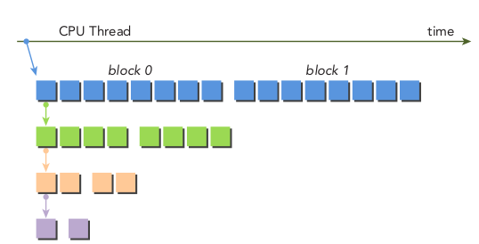
Dynamic parallelism: recursive reduce (no sync, version 2)
__global__ void gpuRecursiveReduce2(int *g_idata, int *g_odata, int iStride, int const iDim)
{
// convert global data pointer to the local pointer of this block
int *idata = g_idata + blockIdx.x * iDim;
// stop condition
if (iStride == 1 && threadIdx.x == 0)
{
g_odata[blockIdx.x] = idata[0] + idata[1];
return;
}
// in place reduction
idata[threadIdx.x] += idata[threadIdx.x + iStride];
// nested invocation to generate child grids
if(threadIdx.x == 0 && blockIdx.x == 0)
{
gpuRecursiveReduce2<<<gridDim.x, iStride / 2>>>(g_idata, g_odata,
iStride / 2, iDim);
}
}